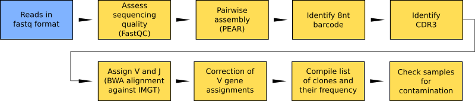

Welcome to RESEDA’s documentation!¶
REpertoire SEquencing Data Analysis
Data analysis workflow for T- and B-cell receptor repertoire sequencing. The workflow identifies clones and their frequency from next generation sequencing of repertoires and includes steps for quality control and bias correction.
Running the software on one machine¶
Read the following sections for running the software on one machine:
Requirements
Prepare input files
Run standalone
Running the software on multiple machines¶
RESEDA can run on multiple machines (such as a cloud system) using the ToPoS pilot job framework (surfsara.nl) and a job monitoring tool. The input and output data is stored on a webdav server in that case. Read these pages for instructions:
Requirements
Settings
Prepare input files
Run with ToPoS